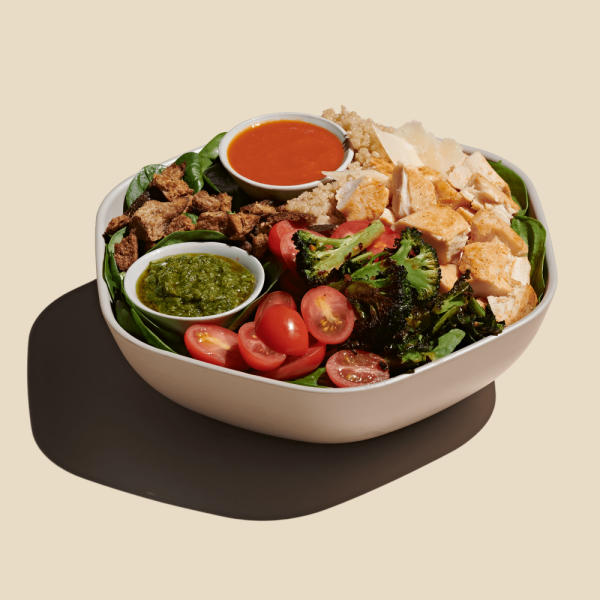

Chicken Pesto Parm

Description
YUM!
Ingredients
- Roasted chicken
- spicy broccoli
- tomatoes
- shaved parmesan
- za’atar breadcrumbs
- warm quinoa
- baby spinach
- sweetgreen hot sauce
- pesto vinaigrette
Instructions
- Preheat the oven to 425. Toss chicken breasts with olive oil and umami seasoning. Transfer to a lined baking sheet and cook in the oven for 20 minutes, until the chicken reaches 165 degrees.
- Slice the chicken into bite sized cubes.
- Toss the broccoli with olive oil, umami seasoning, and red pepper flakes. Transfer to a lined baking sheet and cook in the oven for 15 minutes. I recommend cooking the broccoli at the same time as the chicken to save time.
- Add water to a pot over medium heat. When the water is boiling, add quinoa. Cover, turn heat to low, and cook for 15-20 minutes.
- Wash the cherry tomatoes and cut in half.
- Add the slice of bread to a food processor and pulse until small breadcrumbs remain. Transfer the breadcrumbs to a small pan over medium heat. Add olive oil and za'atar. Stir continually and cook until the breadcrumbs are toasted.
- Add basil, olive oil, apple cider vinegar, umami seasoning, and garlic to a food processor. Blend until smooth.
- To assemble the salad, add the spinach and quinoa to a large bowl. Add the vinaigrette and toss to combine. Divide the greens between two bowls. Top each with roasted chicken, cherry tomatoes, roasted broccoli, parmesan, and za'atar breadcrumbs. Enjoy!